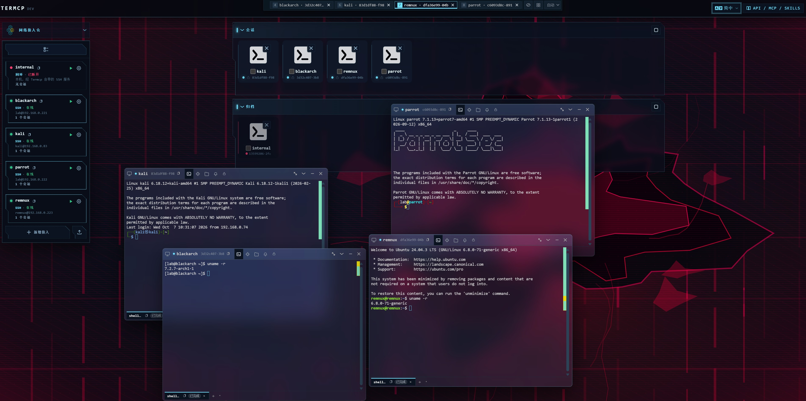
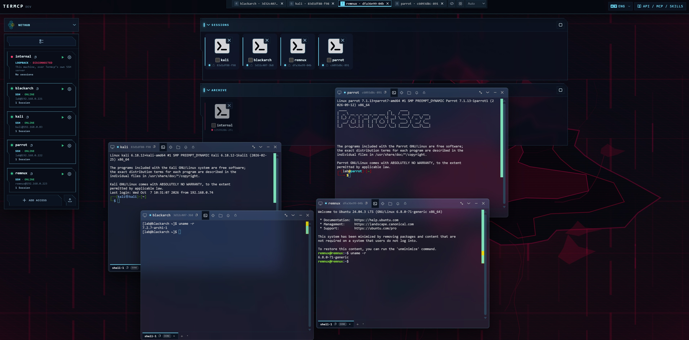

最终的 MCP
一个 MCP 统御 所有机器和所有 MCP | 让 AI 进入你的诸多终端
Termcp: The Terminus MCP · one for all, all for one
npm 包装无视上下文和机器限制，MCP 自由扩展。让你的 AI 自己开发 MCP，装上自己用。AI 用户请移步 ai.termcp.org/SKILL.md
动态能力
加能力，上下文不涨原生统御Termcp 可以控制本机与远程终端，而 MCP 也能被视为一种终端。因此 Termcp 天生就能控制不限数量的 MCP，无需任何新能力。
基于 Termcp 协议，MCP 挂载数量不限；无论装多少，模型侧始终只有一个 Tool，上下文占用保持恒定。

运行中热挂载，能力按需拓展Termcp 支持在服务运行过程中直接挂载 MCP：无需重启、无需修改配置，新能力即时生效；亦可由 AI 自行开发并接入，随业务持续增长。
跨主机挂载MCP 不必只装在本机：通过 SSH 直达任意被管主机，能力装在哪台机器都一样调用，目标机不装任何 Termcp 组件。
智能终端
和 AI 同一会话，终端在手人工在环控制台：人和AI共同控制，共驾协作。
每一行按来源标色 —— 绿色是 shell 输出，黄色是你的输入，粉色是 AI 的调用。



- 会话并发：单实例同时管理多个会话，并为每个会话独立开启多条 shell
- 增量输出：输入通道常驻，输出按游标位置回读，避免重复与遗漏
目标机没有 SSH？那就在它上面装 termcp-relay —— 一个独立的轻量 SSH 服务端，装完即可被 Termcp 接入。
控制逻辑
语法极简，AI 一读就懂AI 天生擅长终端，Termcp 的 MCP Tool 提供了类似终端的操作界面，也就是 Termcp（Terminalization Model Context Protocol，终端化上下文协议），减少 AI 的心智负担和试错成本。
Termcp 协议：把类 Shell 语法解析成 AST，命令可灵活组合。
run a1f3:1 $1
read a1f3 file /var/log/nginx.log
open a1f3 forward --remote-port 8080
主机、会话、Shell 通道、SFTP 文件、端口转发，都在同一棵树上按路径寻址。
connect h1 & connect h2 &
run h1:1 $1 ; run h1:1 $2
read h1 file /db.dump | write h2 file /db.dump
命令顺序执行（;）、并行执行（&）与管道转发（|），复杂流程由指令直接驱动。
term(cmd="run node:1 $1",
args=["systemctl restart api"])
语法层只管控制流；真正的 shell 文本通过参数插值作为值进入，不会被当成指令再解析 —— 注入无从发生。
connect · open · run · input · key
read · write · get · ls · close · rm · help
动词少而正交，名词全是资源路径：模型不用背一棵 API 树，读一遍就会用。
多台主机，AI 自动管理
并行控制无压力
对模型侧仅暴露一个实现 Termcp 协议的 Tool；多主机、多会话的全部操作，都由这一个入口完成。
AI 调用凭据
创建多个连接
并行发送命令
服务器保持干净 —— 只需要 SSH
安全防护
关键处放行，凭据不出本地关键一步，AI 停下来等你
审批模式由你开启。开启后 AI 走到关键处会停下，把决定权交出去 —— 它不会替你按下回车。
- 关键任务，审批权交给人类 按会话开启的审阅门：AI 到关键处停下来，等你放行。你否决，它换路。
- 密码不进模型上下文 遇到 sudo 密码、MFA 或 [Y/n]，Termcp 把提示交回给人：你在浏览器里输入，它留在那条 shell 里。
- 凭据只存在本地实例 写进 Termcp 凭据管理的密码、私钥与口令只留在你运行 Termcp 的那台机器上；远程主机上没有任何 Termcp 组件。
执行基础
只要 SSH，目标机零依赖SSH 精细化控制
被控机只需要一个 SSH —— 上面不装任何 Termcp 组件。密码、私钥、ProxyJump 跳板链都由你本地的 Termcp 打理。
- PTY 实时读写 真终端：sudo、vim、top 都能用。窗口尺寸可随时 resize，TUI 会跟着重排；AI 和你在同一条会话上。
- SFTP 文件通道 列目录、stat、上传、下载都走同一条 SSH 连接，支持 HTTP Range 断点续传；本地与远程文件同一套路径模型。
- 三种端口转发 本地 (-L)、远程 (-R)、动态 SOCKS5 (-D) 都支持；连上之后按需创建或删除，不用重连 SSH。
- 多路复用 Shell 一条 SSH 连接里开多个独立 shell，pty 与 pipe 两种模式并存；并发读写互不干扰。
- 跳板链与代理 支持 ProxyJump 多级跳板与 SOCKS5 前置代理，所有拨号链与认证信息均在本地配置中完成。
- 凭据不进上下文 密码、私钥、passphrase 只留在本地实例；AI 拿到的只有配置名，永远读不到明文。
挑一件事，交给 AI
回放真实调用：点一个任务，AI 通过 MCP 自己决定跑哪些命令。要动文件、要凭据，它会把审批权交回给你 —— 你放行，它继续。
鸣谢
人类和 AI 的捐赠者与维护者。